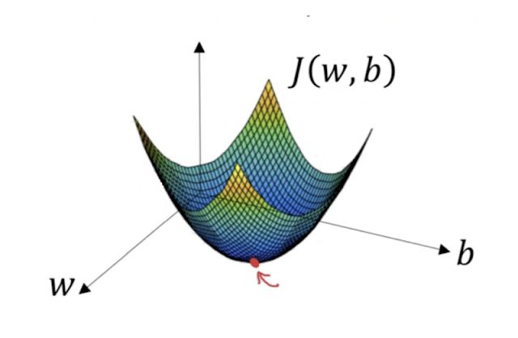
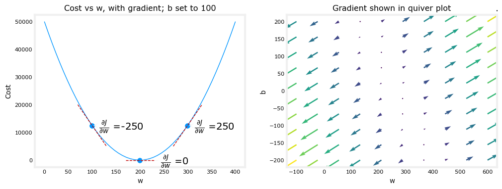
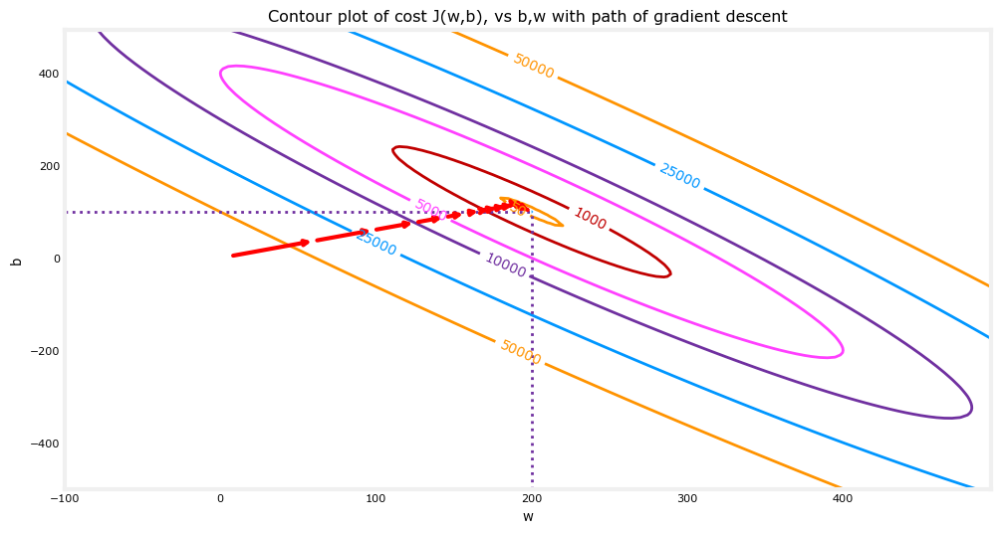

Gradient Descent is a method for unconstrained math optimization. It is a first order iterative algorithm for minimizing differentiable multivariate function. The key idea is to take repeated steps in the opposite direction of the gradient of the function at the current point, because this is a direction of steepest descent. –> Conversely, stepping in the direction of the gradient will lead to a trajectory that maximizes that function, the procedure is then know as gradient ascent

In this tutorial we will automate the process of optimizing \(w\) and \(b\) usig gradient descent
import math, copy
import numpy as np
import matplotlib.pyplot as pltProblem Statement
Let’s use the same two data points as before - a house with 1000 square feet sold for \$300,000 and a house with 2000 square feet sold for \$500,000.
| Size (1000 sqft) | Price (1000s of dollars) |
|---|---|
| 1 | 300 |
| 2 | 500 |
x_train = np.array([1.0, 2.0])
y_train = np.array([300.0, 500.0])Define cost function
We consider a linear model that predicts \(f_{w,b}(x^{(i)})\): \[f_{w,b}(x^{(i)}) = wx^{(i)} + b \tag{1}\] In linear regression, we utilize input training data to fit the parameters \(w\),\(b\) by minimizing a measure of the error between our predictions \(f_{w,b}(x^{(i)})\) and the actual data \(y^{(i)}\). The measure is called the \(cost\), \(J(w,b)\). In training we measure the cost over all of our training samples \(x^{(i)},y^{(i)}\) \[J(w,b) = \frac{1}{2m} \sum\limits_{i = 0}^{m-1} (f_{w,b}(x^{(i)}) - y^{(i)})^2\tag{2}\]
Let’s define cost function described above.
def compute_cost(x, y, w, b):
m = x.shape[0]
cost = 0
for i in range(m):
f_wb = w * x[i] + b
cost = cost + (f_wb - y[i])**2
total_cost = 1 / (2 * m) * cost
return total_costGradient descent code implementation
\[\begin{align*} \text{repeat}&\text{ until convergence:} \; \lbrace \newline \; w &= w - \alpha \frac{\partial J(w,b)}{\partial w} \tag{3} \; \newline b &= b - \alpha \frac{\partial J(w,b)}{\partial b} \newline \rbrace \end{align*}\] where, parameters \(w\), \(b\) are updated simultaneously. The gradient is defined as: \[ \begin{align} \frac{\partial J(w,b)}{\partial w} &= \frac{1}{m} \sum\limits_{i = 0}^{m-1} (f_{w,b}(x^{(i)}) - y^{(i)})x^{(i)} \tag{4}\\ \frac{\partial J(w,b)}{\partial b} &= \frac{1}{m} \sum\limits_{i = 0}^{m-1} (f_{w,b}(x^{(i)}) - y^{(i)}) \tag{5}\\ \end{align} \]
Here simultaniously means that you calculate the partial derivatives for all the parameters before updating any of the parameters.
We will implement GD algorithm for one feature. We need three functions:
compute_gradientimplementing equation (4) and (5) abovecompute_costimplementing equation (2) above (code from previous lab)gradient_descent, utilizing compute_gradient and compute_cost
def compute_gradient(x, y, w, b):
m = x.shape[0]
dj_dw = 0
dj_db = 0
for i in range(m):
f_wb = w * x[i] + b
dw_dw_i = (f_wb - y[i]) * x[i]
dj_db_i = (f_wb - y[i])
dj_db += dj_db_i
dj_dw += dj_dw_i
dj_dw = dj_dw / m
dj_db = dj_db / m
return dj_dw, dj_db
Above, the left plot shows \(\frac{\partial J(w,b)}{\partial w}\) or the slope of the cost curve relative to \(w\) at three points. On the right side of the plot, the derivative is positive, while on the left it is negative. Due to the ‘bowl shape’, the derivatives will always lead gradient descent toward the bottom where the gradient is zero.
The left plot has fixed \(b=100\). Gradient descent will utilize both \(\frac{\partial J(w,b)}{\partial w}\) and \(\frac{\partial J(w,b)}{\partial b}\) to update parameters. The ‘quiver plot’ on the right provides a means of viewing the gradient of both parameters. The arrow sizes reflect the magnitude of the gradient at that point. The direction and slope of the arrow reflects the ratio of \(\frac{\partial J(w,b)}{\partial w}\) and \(\frac{\partial J(w,b)}{\partial b}\) at that point. Note that the gradient points away from the minimum. Review equation (3) above. The scaled gradient is subtracted from the current value of \(w\) or \(b\). This moves the parameter in a direction that will reduce cost.
Now that gradients can be computed, gradient descent, described in equation (3) above can be implemented below in gradient_descent.
def gradient_descent(x, y, w_in, b_in, alpha, num_iters, cost_function, gradient_function):
J_history = []
p_history = []
b = b_in
w = w_in
for i in range(num_iters):
dj_dw, dj_db = gradient_function(x, y, w, b)
b = b - alpha * dj_db
w = w - alpha * dj_dw
if i<100000:
J_history.append(cost_function(x, y, w, b))
p.history_append([w,b])
if i%math.ceil(num_iters/10) ==0:
print(f"Iteration {i:4}: Cost {J_history[-1]:0.2e} ",
f"dj_dw: {dj_dw: 0.3e}, dj_db: {dj_db:0.3e} ",
f"w: {w:0.3e}, b:{b:0.5e}")
return w, b, J_history, p_historyTraining with GD
# initialize parameters
w_init = 0
b_init = 0
# some gradient descent settings
iterations = 10000
tmp_alpha = 1.0e-2
# run gradient descent
w_final, b_final, J_hist, p_hist = gradient_descent(x_train ,y_train, w_init, b_init, tmp_alpha,
iterations, compute_cost, compute_gradient)
print(f"(w,b) found by gradient descent: ({w_final:8.4f},{b_final:8.4f})")Take a look at the training process by running this code. You will notice that \(dj_dw\) and \(dj_db\) get smaller, rapidly at first and then more slowly. As the process nears the ‘bottom of the bowl’ progress is slower due to the smaller value of the derivative at that point.
Now that you have discovered the optimal values for the parameters \(w\) and \(b\), you can now use the model to predict housing values based on our learned parameters. As expected, the predicted values are nearly the same as the training values for the same housing. Further, the value not in the prediction is in line with the expected value.
print(f"1000 sqft house prediction {w_final*1.0 + b_final:0.1f} Thousand dollars")
print(f"1200 sqft house prediction {w_final*1.2 + b_final:0.1f} Thousand dollars")
print(f"2000 sqft house prediction {w_final*2.0 + b_final:0.1f} Thousand dollars")I we take a look at the progress of gradient descent during its execution by plotting the cost over iterations on a contour plot of the cost(w,b), we will see:

Above, the contour plot shows the \(cost(w,b)\) over a range of \(w\) and \(b\). Cost levels are represented by the rings. Overlayed, using red arrows, is the path of gradient descent. Here are some things to note: - The path makes steady (monotonic) progress toward its goal. - initial steps are much larger than the steps near the goal